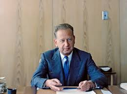

Om
Hammarskjöld, Dag, född 29 juli 1905, död 18 september 1961, ämbetsman, FN:s generalsekreterare från 1953; jämför släktartikel Hammarskjöld. Dag Hammarskjöld växte upp i Uppsala där fadern, Hjalmar Hammarskjöld, var landshövding. Han blev 1933 docent i nationalekonomi (och räknas till den s.k. Stockholmsskolan), var 1936–45 statssekreterare i Finansdepartementet och övergick 1946 till Utrikesdepartementet. Åren 1947–48 var han svensk delegat vid OEEC-förhandlingarna och 1949–51 kabinettssekreterare. Hammarskjöld var konsultativt statsråd 1951–53 och valdes i april 1953, trots visst inledande motstånd från Sovjetunionen, till FN:s generalsekreterare efter Trygve Lie. Han var ledamot av Svenska Akademien från 1954.
Nobelpris
Han tilldelades postumt Nobels fredspris 1961. Mångsidigheten i hans personlighet blev uppenbar inte minst genom de mycket personliga anteckningar han efterlämnade och som utkom i bokform efter hans död, Vägmärken (1963). Hammarskjöld framstår där som djupt religiöst engagerad, något av en mystiker.
